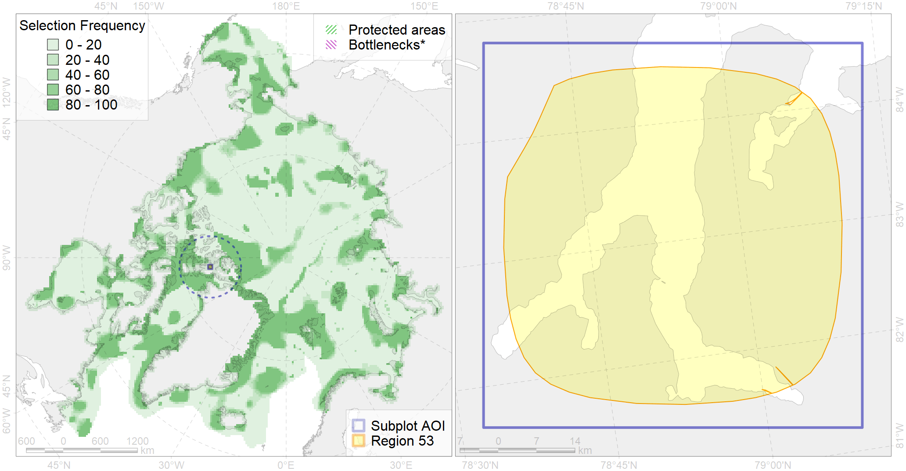

Region 53
Region 53
“ArcNet” scenario 33 achievement for region 53.
Use Accenter for advanced mode.

0
CFs inside of Region completely
0
CFs inside of Region at quarter
0
Complete-targets achievement by Region
0
Half-targets achievement by Region
| CF | Name | Target Achievement for Region | Proportion of Target Achievement in Region | Amount Proportion in Region |
|---|---|---|---|---|
| 9033 | polar bear denning areas of NW (Norwegian Bay) subpopulation | 16.1% | 15.9% | 15.1% |
| 7215 | Canadian Archipelago kelp patches (2-9) | 12.5% | 7.1% | 5.5% |
| 5082 | Narwhal Jones Sound stock summer distribution | 2.5% | 2.4% | 1.7% |
| 6008 | Brent goose (Branta bernicla hrota) Canadian High Arctic breeding&moulting grounds | 4.0% | 2.0% | 1.4% |
| 2014 | Bearded seal whelping areas in the north of the Canadian Archipelago | 2.1% | 1.4% | 0.7% |
| 7134 | III.1.1. 1. Canadian Arctic Archipelago shelf | 3.2% | 0.5% | 0.3% |
| 7021 | Eastern Canadian Archipelago region | 1.2% | 0.2% | 0.2% |
| 7133 | III.1. Canadian Arctic Archipelago shelf and margin | 1.9% | 0.2% | 0.1% |
| 7014 | Core of Canadian - Greenland Province of Arcto-Atlantic zoogeographical region | 0.9% | 0.1% | 0.1% |
| 7137 | III.1.1.4. Canadian Archipelago glacial troughs | 1.1% | 0.2% | 0.1% |
| 4074 | Fish zoogeography, Arctic Region, High-Arctic Shelf Province, Canadian-Greenland District (10A) | 0.5% | 0.1% | 0.1% |
| 4029 | Feeding area of the Arctic charr (Salvelinus alpinus), anadromous populations (F28) | 0.1% | 0.1% | 0.0% |
| 4053 | Range of the Fourhorn Sculpin (Myoxocephalus quadricornis) (F 45), Euro-Asian populations | 0.9% | 0.1% | 0.0% |
| 6094 | 6094 PagophileburneCanadian breeding colonies | 0.1% | 0.0% | 0.0% |
| 4037 | Distribution of the Glacial cod (Arctogadus glacialis) (F34) | 0.1% | 0.0% | 0.0% |
| 3051 | Multiyear Ice distribution in September in the Northern Canadian Archipelago LME | 0.0% | 0.0% | 0.0% |
| 4041 | Range of the Polar Cod (Boreogadus saida) (F35) | 0.0% | 0.0% | 0.0% |
| 7136 | III.1.1.3. Archipelago inner shelf of low and medium profile | 0.1% | 0.0% | 0.0% |